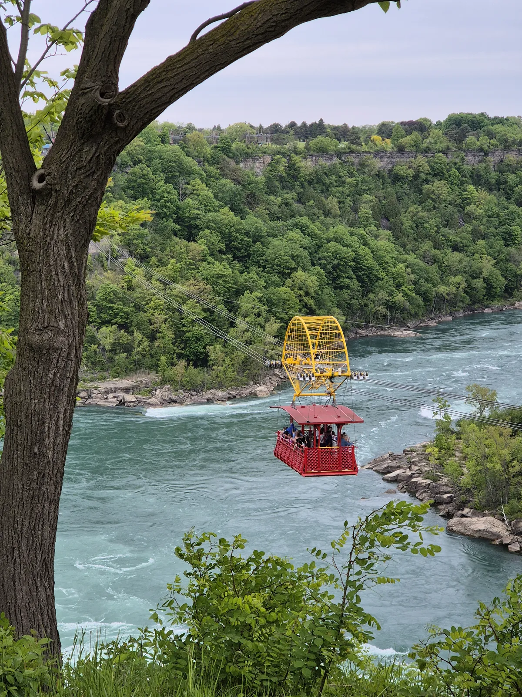
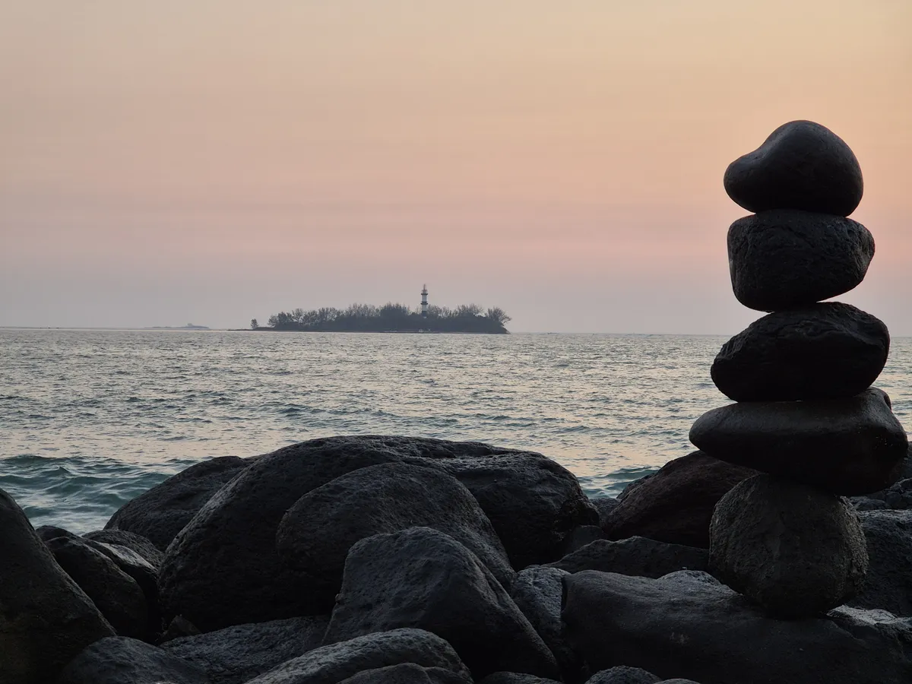
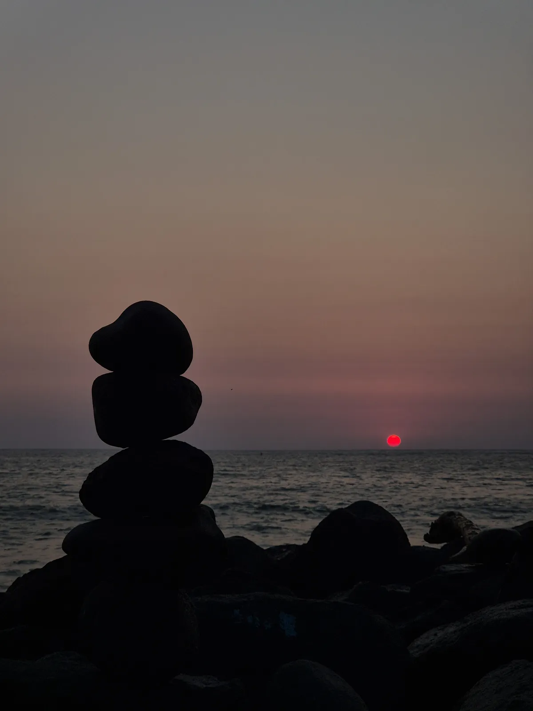
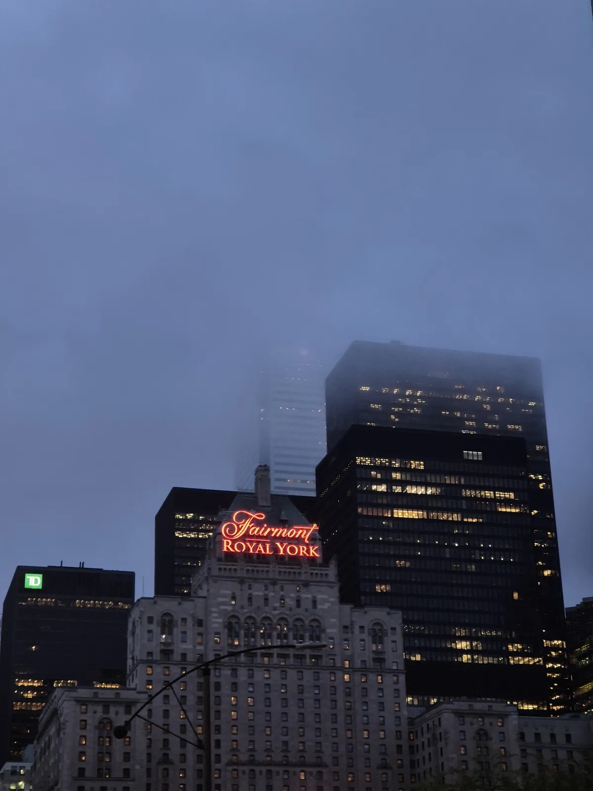
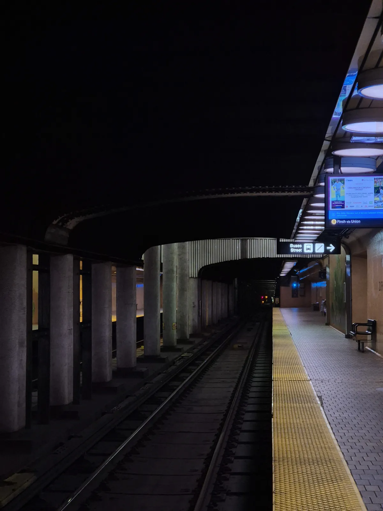
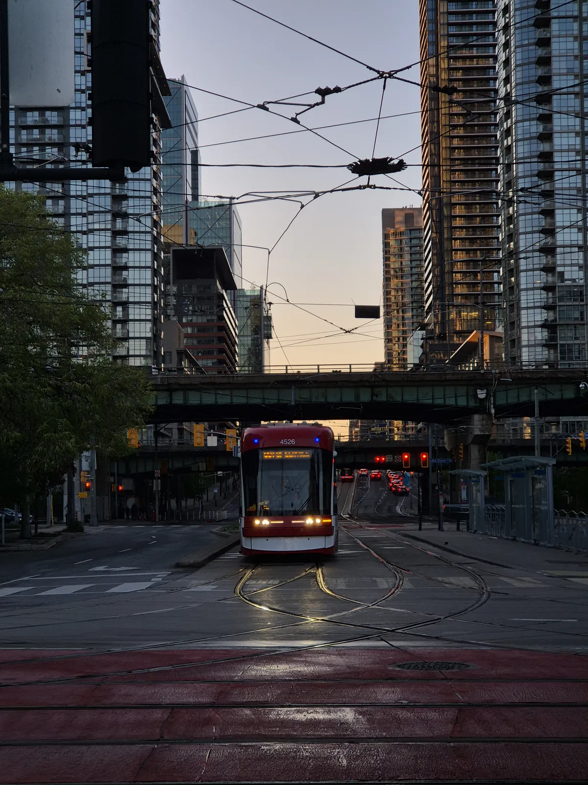

My Photography
Voladores de Papantla. Veracruz, Mexico.
CN Tower. Toronto, Canada.
CN Tower reflection on windows. Toronto, Canada.
CN Tower from port. Toronto, Canada.

Orange columns. Guadalajara, Mexico.
Between orange columns. Guadalajara, Mexico.

The Cable Car. Somewhere in Canada.

Colorful boat. Veracruz, Mexico.

Rocks and the Island of Sacrifices. Veracruz, Mexico.

Rocks and Sunrise. Veracruz, Mexico.

Fairmont Royal York building between the fog. Toronto, Canada.

Subway tunnel. Toronto, Canada.

Tram with sunset. Toronto, Canada.